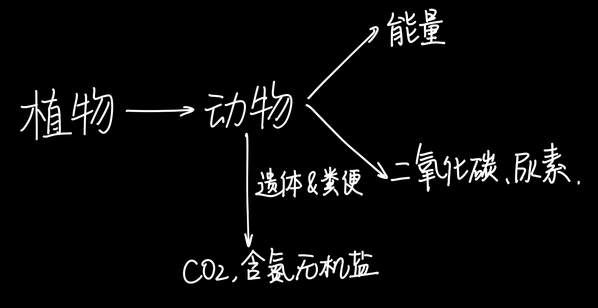

第三章-动物在生物圈中的作用
在自然生态系统中，各种生物之间、生物与环境之间存在着互相依赖、互相制约的关系
生态平衡的概念：在生态系统中，生物的种类、各种生物的数量和所占比例总是维持在相对稳定的状态，这种状态叫做生态平衡
物质循环
动物能够促进生态系统的物质循环
没有动物，物质循环仍可以进行，但是会变得非常缓慢
动物和植物的关系
自然界中的动物和植物在长期生存与发展的过程中，形成了互相适应、相互依存的关系
动物帮助植物传粉的意义
- 正面意义：扩大植物的分布范围
- 负面：当某种动物数量过多时，也会对植物造成危害